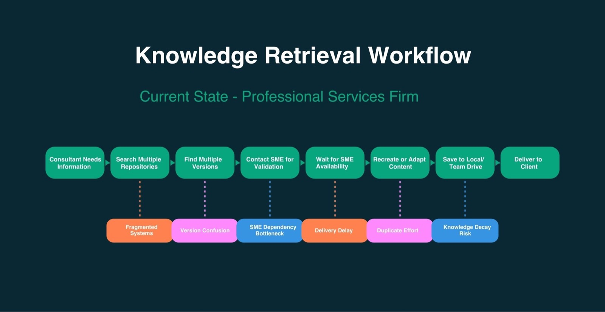

Operationalising Institutional Knowledge with AI through a structured discovery process, permission-aware retrieval architecture and a measurable MVP pilot design.
30–50%Retrieval time reduction
25–40%Billable delivery uplift
70%Duplicate work eliminated
$1.8M–$2.6MRework cost avoided p.a
All metrics are pilot estimates.
Overview
This case study translates an ambiguous enterprise AI opportunity into a practical implementation blueprint. The objective was to help a consulting organisation unlock and operationalise institutional knowledge spread across proposals, delivery artefacts and legacy documentation.
The resulting design focuses on secure ingestion, semantic retrieval (RAG), and deployment into existing collaboration environments so teams can find and reuse internal knowledge faster without compromising governance.
Company Overview
Northbridge Advisory Group (fictional) is a 450-person professional services firm in Sydney, Melbourne and Brisbane, delivering digital transformation, ERP implementation, analytics and operational optimisation programs for enterprise and mid-market clients.
Business Context
Five years of rapid growth, service-line expansion and acquisitions created significant knowledge fragmentation. Valuable intellectual property existed across disconnected systems and individual repositories, making reuse inconsistent and slow.
Knowledge spread across SharePoint, Google Drive, legacy Confluence, proposal archives and delivery documents
No structured retrieval capability across repositories
High dependency on informal expert networks to locate reusable content

Current-state knowledge retrieval workflow and points of friction.
Initial Problem Statement
Leadership identified a large volume of valuable institutional IP but low practical reuse across bids and delivery. Teams were spending significant time searching, recreating content and escalating to SMEs rather than leveraging existing knowledge assets.
Observable Pain Points
Proposal teams frequently recreated content from scratch
Case studies and methodologies were difficult to locate quickly
Consultants reinvented deliverables across engagements
Critical IP risk increased when key employees exited
Duplicate documentation persisted across multiple systems
Structured Discovery Framework
Stakeholder discovery across sales, delivery, practice leads, knowledge management and IT/security
Content landscape mapping: repositories, file formats, duplication and metadata maturity
Workflow analysis for proposal development, delivery preparation and SME escalation patterns
Risk and governance assessment: permissions, compliance, client confidentiality and data residency
This discovery phase reframed the challenge as a retrieval and governance problem, not only an automation problem.
Refined Problem Statement
The organisation lacked a structured, permission-aware capability for retrieving institutional knowledge across disconnected systems. This drove duplicated effort, inconsistent outputs, repeated SME interruptions and reduced delivery scalability.